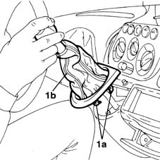
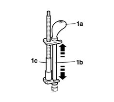
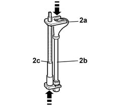

2125C24 gear lever knob - r + r
- Path
- Procedures > 21 GEARBOX > 2125 MANUAL GEARBOX EXTERNAL CONTROLS > 2125C manual gearbox external control (cables) > 2125C24 gear lever knob - r + r
- Kind
- repair procedure (removal / refitting; the operation number is the code)
- Applies to
- all engines; all production periods
- Interactive page
- https://sloeber94.github.io/elrnDB-fMltpl/en/#/2891550
Applies to: all engines; all production periods
 Removing
Removing
 Refitting
Refitting1. Release the clips (1a) and remove the handle gaiter (1b) from the lower seat on the dashboard.

Applies to: all engines; all production periods
1. Position the tool (1c) as illustrated in the figure and undo the bolt until the knob (1a) is completely removed from the lever (1b).
 | Name | Country |
|---|---|---|
1c | Extractor | 1.870.668.000 |

Applies to: all engines; all production periods
Refitting
Removing1. Position the tool (1c) as illustrated in the figure and act on the bolt until the knob (2a) is fully fitted on the lever (2b).
| Name | Country |
|---|---|---|
1c | Extractor | 1.870.668.000 |

Applies to: all engines; all production periods
Position the boot and secure the fastening springs.
Topics that link to this page (40)
- 2125C14 gear hand-lever mount bracket (one)- r r
- 2125C16 gear hand-lever - r r
- 2125C28 gear control lever - r r
- 2125C30 gear engagement cable - r r
- 5010B24 under-facia air ducts r r
- 5010C30 central air outlet on fascia - r+r
- 5010D18 top mixed air temperature sensor - r+r following electrical wiring check with heater case removed
- 5010D40 passenger compartment air sensor fan - r+r
- 5020A10 heater box - r+r
- 5020A50 heater radiator - r+r
- 5020B10 heater control support - r+r
- 5020B28 air conditioner symbol light bulb/s - includes control panel r+r
- 5020B38 air distribution flap control cable - r+r
- 5020B42 air mixer flap control cable - r+r
- 5020B80 heater system wiring bundle - r r or replace
- 5040B30 expansion valve (tube orifice) - r+r
- 5040B64 sensor on evaporator for a/c ecu - r + r
- 5040C10 air conditioner box - r+r
- 5040C50 air conditioner heater radiator - r+r
- 5040C64 a/c evaporator - r+r
- 5040C10 air conditioner control support - r+r
- 5040C28 bulb/s of climate control illumination r r
- 5040C38 air distribution flap control cable - r+r with control support removed
- 5040C40 air mixer flap control cable - r + r
- 5040C52 air inlet and recirculation flap actuator - r r
- 5040C64 a/c manual control switch (one) - r+r
- 5040C90 air conditioner system wiring bundle - r r
- 5040D77 air conditioner mixer flap control motor - r r
- 5505A24 w/l and service switch mount - r+r
- 5505C31 under-facia wiring - r r
- 5505C41 cabin wiring - r r
- 5540C18 headlamp/light cluster alignment correction motor switch - r+r
- 5560B10 analogue control panel - r+r
- 5580C80 airbag system wiring bundle - r r or replace
- 5580M80 on-board navigator system wiring harness - r r
- 5580M84 navigation system mount junction unit - r r
- 7040A04 facia lower trim-r r
- 7040A11 control panel lid - r + r
- 7040A25 central facia trim - r r
- 7065C10 air conditioning control panel - r+r